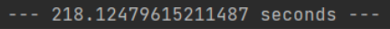

תחילה אומר שניסיתי ככל יכולתי ומקווה שהצלחתי להעביר את השאלה בלי להזכיר אף תרגיל ספציפי.
הרגע גמרתי את האחד מהתרגילים שהופיעו בשבועות הקודמים ואין מה להגיד המודלים האלו זה Game Changer.
תרגיל זה שוב עורר בי שאלה שרציתי לכתוב כבר זמן רב, שאלה שלא נותנת מנוח לנפשי, קראתי כאן אשכולות קשורים אך תשובה מספקת עדיין לא קיבלתי. כדי לפתור את אחד מהתרגילים יש לבצע מספור למילים בצורה חכמה.
ולתומי עד שנתקלתי בהפרשי הזמנים העצומים בין שתי השיטות חשבתי שמצאתי את הדרך האולטימטיבית למספור האיברים ברשימה בלי צורך לעבור על כולה כל פעם מחדש ברגע שנתקלים במילה חדשה.
האם ישנה אפשרות להסביר מדוע מתודה א כל כך לא יעילה לעומת מתודה ב? אחדד את השאלה ואומר שבשני המתודות אני עובר על הרשימה כולה רק פעם אחת, לכן מאיפה מגיע פער הזמנים העצום (במתודה א, שיניתי את פונקצייה count כך שלא תעבור כל פעם על כל הטקסט).
,תודה מראש על ההתייחסות.
.
מתודה א: – מיון בעזרת רשימה - צורה לא יעילה
my_list = ['a', 'a', 'a', 'b', 'b', 'c']
new_dic = {}
while my_list:
counting = 0
current = my_list[0]
while counting < len(my_list) and my_list[counting] == current:
counting += 1
new_dic[current] = counting
my_list = my_list[ counting :]
print(new_dic)
# {'a': 3, 'b': 2, 'c': 1}

מתודה ב: – מיון בעזרת מילון
my_list = ['a', 'a', 'a', 'b', 'b', 'c']
new_dic = {}
for word in my_list:
if word in new_dic:
new_dic[word] += 1
else:
new_dic[word] = 1
print(new_dic)
# {'a': 3, 'b': 2, 'c': 1}